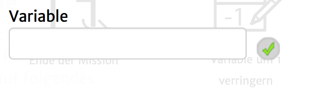

Mit diesem Aktionstyp ist es möglich, eine explizite numerische Variable um 1 zu erhöhen. Du bist dabei selbst dafür verantwortlich, dass die Variable, die du angibst existiert und eine Zahl beinhaltet.
Diese Zahl darf nur aus Ziffern bestehen (also nicht ausgeschrieben).
Folgende Einstellungsmöglichkeiten gibt es für diesen Aktionstyp:
|  | Variable: Der Name der Variable, die um 1 erhöht werden soll. |